The project was to redesign the website of a non-profit. I or my team are in no way affiliated with the DTPC, this was only a learning experience in a classroom setting. We were in groups of 3 people. My group divided the work up as equally as possible so that we each played the part of UX Research, UI Design, Tester, and Presenter. The entire process took 3 weeks to complete.
We chose the DTPC because it was local and completely new to all 3 of us and we felt that meant we could come at the project with the freshest perspective.
Link to Presentation
The website has decent bones as far as pages and navigation, there are definite improvements that we chose to make, but we felt there was a good starting point.
The biggest issue are the calls to action. There are not many and they not at all prominent. This was the very first item on our agenda, add more and make them visible.
Further issues include the poor quality of the logo, it is difficult to read over the carousal images, the poor quality of the images, and the lack of major transparency. These all add up to a website that does not do much to invite users to feel comfortable donating their time or money.
We started our research with a competitive analysis. We found several other Desert Tortoise non-profit websites and did a SWOT analysis of each to figure out the things we did and did not want to apply to our new website. In the chart above you can see where the current DTPC (the green tortoise logo) falls in comparison to the other websites and where we (the new text only DTPC logo) hope to fall with our redesign.
To further our competitive analysis we did an ethnographic observation where we had a potential user look at all of the websites and let us know which one they would be willing to donate to and why. Our main findings were that images helped to foster an emotional connection to the organization, having calls to action be prominent is important, and lastly, that having a mission statement for the organization is a nice incentive but not a requirement.
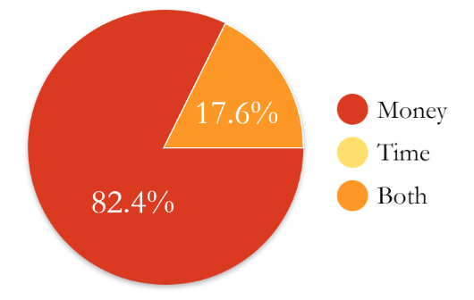 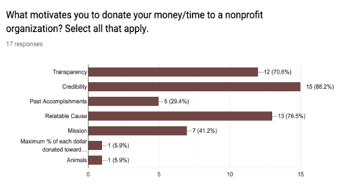The next step of research was to conduct user interviews and surveys. Our goal with these was to discover how people decide when and how to support a nonprofit, whether it be through donating money or volunteering, in addition to what features factor into their decision.
Most users will donate money rather than their time. Therefore, it is important that users have an emotional connection to the cause through transparency and credibility - users should be able to see where their money is going and the website should be welcoming and look professional.
Problem:
Users do not feel comfortable donating their money to an organization that doesn’t show how they spend their funds. Nor if the website does not have an air of credibility through a more professional looking design.
Solution:
Highlight allocation of funds by the organization and give the website a more inviting design with prominent calls to action to entice users to donate.
User Persona:
Mary Wilson
- “If I cannot do great things, I can do small things in a great way.”
- Age: 27
- Career: Paralegal
- Relationship Status: Single
Mary is a hardworking and adventurous person. She tries to be active in the community and wants to be more involved in some way. When she contributes, she likes to do her research so that she feels confident in her decision.
Goals:
- Wants to support local initiatives and find a relatable cause.
- Find the information she is looking for easily.
- Easy, straightforward process and navigation.
Frustrations:
- Unclear website information.
- There is a lack of transparency on certain websites. She does not completely trust them.
Digital Sketches / LoFi Wireframes:
As a team we used InVision’s Freehand to sketch our wireframes together. We designed for desktop and mobile.
Homepage
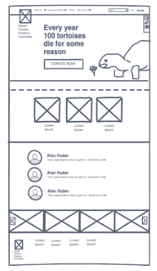 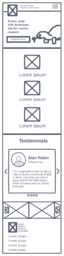Donate Page
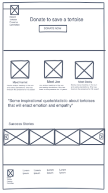Why Trust Us Page
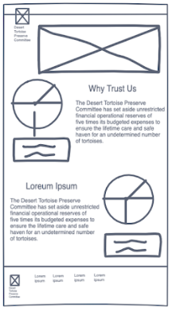Design Style:
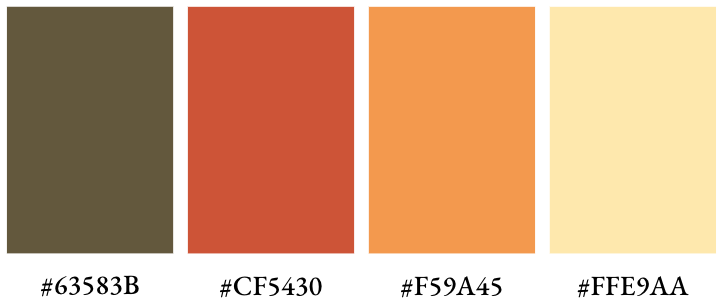We thought we were going to go with a green color scheme because when you think Tortoise, most people think of turtles which are much more familiar and turtles are green. However, Desert Tortoises are not green, they are more of a grey/brown. So we went with a warmer, desert color. We also added a desert sand texture to give the design some dimension. For headers we went with a font called Cubana which we found in a pack of Adobe fonts for the outdoors.
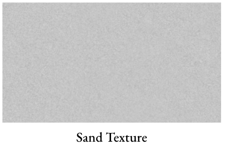 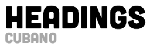 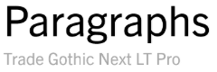We also decided to create a new logo for the Desert Tortoise Preserve Committee. Their current logo is quite large and complex. It doesn’t scale down very nicely. We went with a text only logo to make their name prominent and give scaleability.
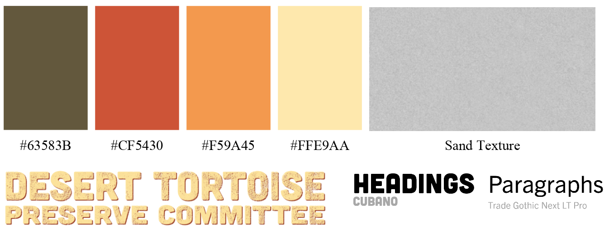 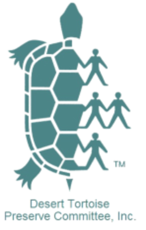 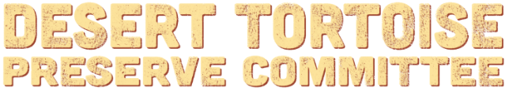Click here to view Prototype

User Testing:
Goal: Allow the user to explore the website and ensure that the donation process is straightforward and easy to understand.
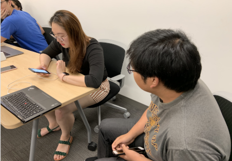Changes made to design due to test findings:
- Have donation buttons go straight to the donation form
- Provide users a link to another page upon finishing
- Visuals and layout
- Consistency across pages
- Design the rest of the pages for both the desktop and mobile prototypes.
- Expand on their social media presence.
- Conduct research on current member base.
- Incorporate a weekly blog.
- Update on organization’s accomplishments and financials.
- Program the website.